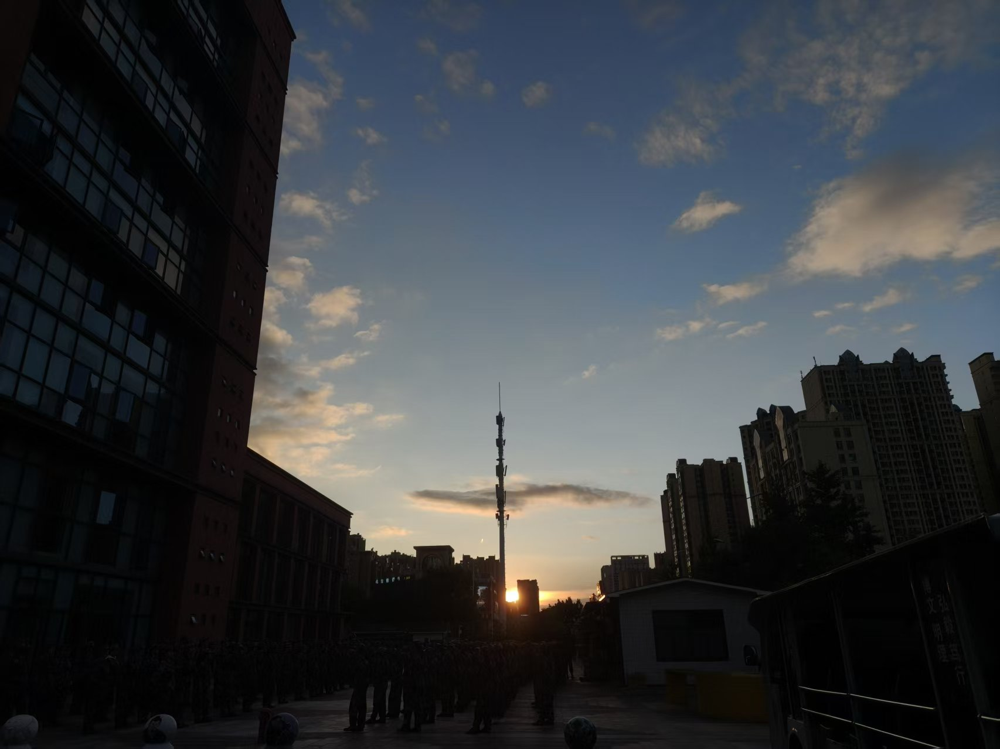
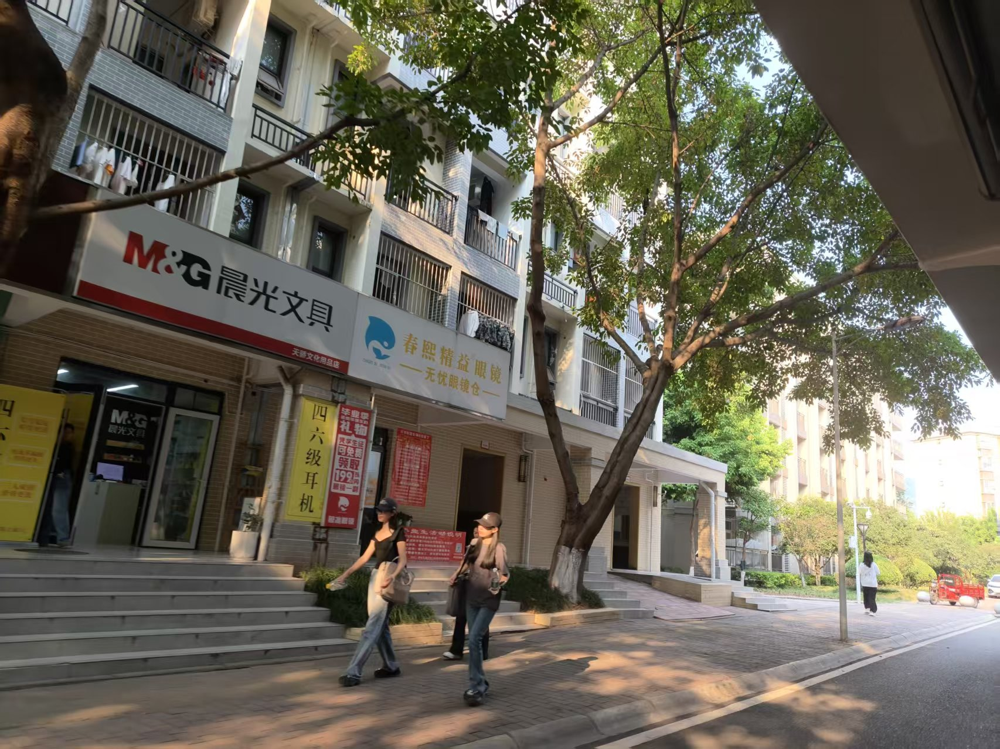
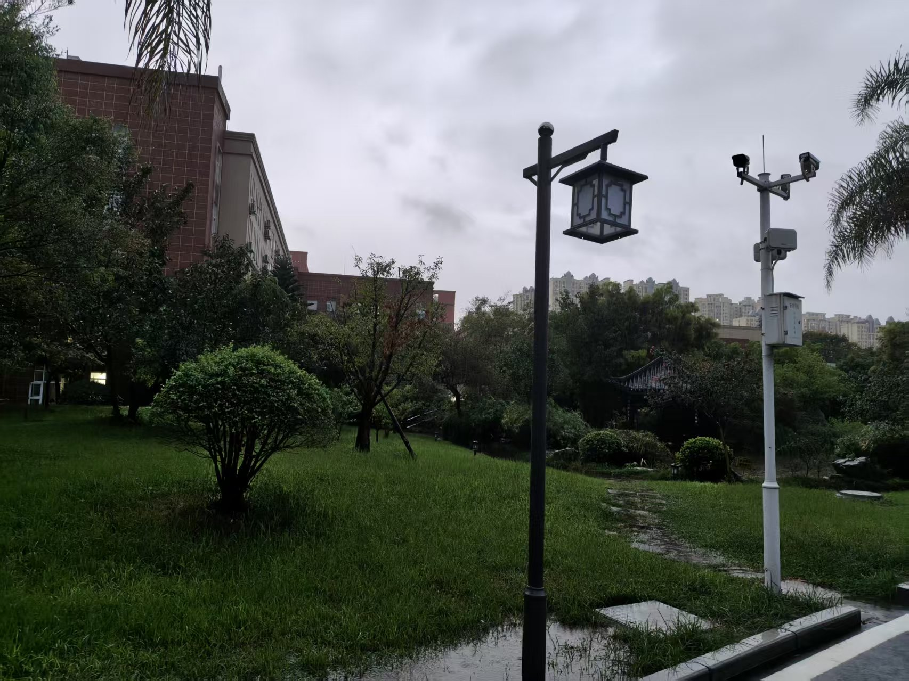
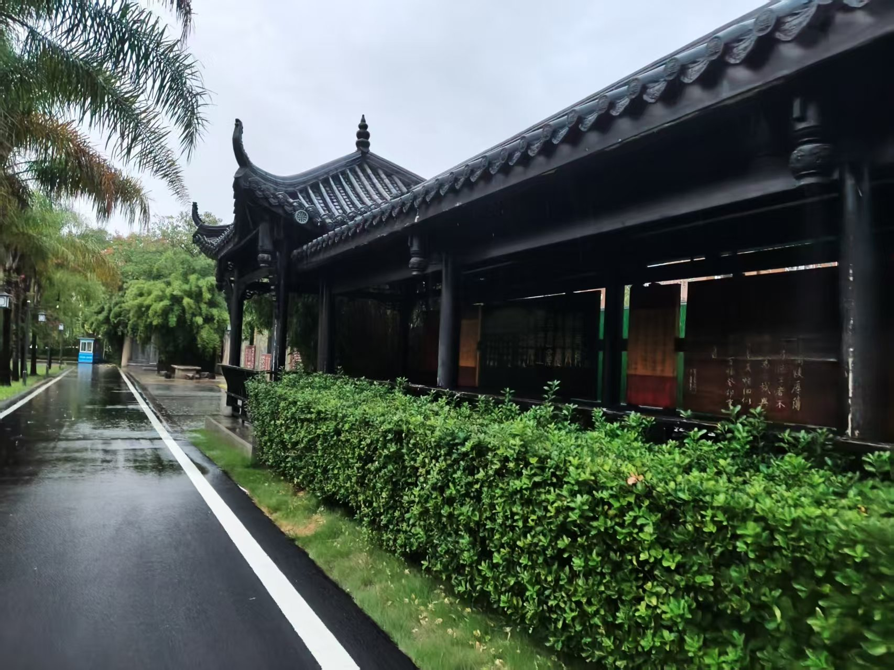

这是我的第一个网页
学校工作职责:
1.研究关系学校发展全局性、长远性、关键性的重大课题；分析研判学校发展环境和形势；研究起草学校中长期发展规划，提出中长期学校发展总体思路、顶层方案、重大任务、重大工程等；组织指导二级单位编制规划及实施计划；代表学校监督与检查规划的实施。 2.负责教育综合改革相关的日常工作，组织协调学校教育综合改革，深化学校教育评价改革等工作。 3.建立和完善本科教育教学评估长效机制，统筹组织校内自评和迎评促建工作。负责教育部、教育厅及学校开展的本科教学工作合格评估、本科教育教学审核评估、专业认证等重大专项评估任务的组织与实施。 4.负责全校综合统计工作，建立健全学校教育统计工作制度，优化统计工作流程，持续提高统计数据质量。依法开展年度高等教育事业统计调查，负责统计数据收集、整理及报表的编制、分析、上报等工作。实施统计监督，为学校事业发展提供统计资料和统计咨询意见。 5.开展本科教学质量常态监测与预警。负责《高等教育质量监测国家数据平台》的数据采集、审核、分析、上报工作，编制年度报告。推进本科教学状态数据库系统的多级应用，全力支撑合格评估、审核评估、专业认证、专业发展评价等工作。 6.牵头起草学校实验室建设规划，组织开展实验室建设申报、论证、立项、协调等工作。 7.对学校的重大改革、重大决策进行研究、论证，提出改革建议或决策参考。 8.完成上级部门和领导交办的其他任务。
希望你喜欢我的网页
如果你想了解更多关于学校，请点击下面的链接：
学院官网